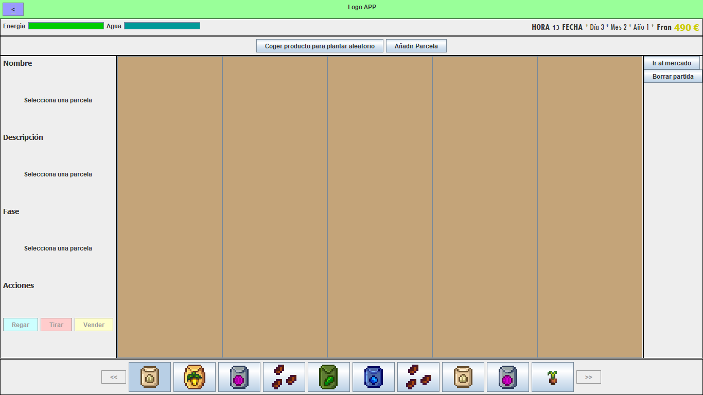

En el huerto podrás almacenar productos en la parcela y en el bolsillo. A los objetos del bolsillo no les pasará nada nunca, pero a los de las parcelas habrá que regarlos, o se secarán al día siguiente. Además, cuanto más pequeños sean, más agua necesitarán.
Deberás administrar tu energía de manera que sea suficiente para todas las actividades que quieres realizar.
Los productos crecidos del todo podrás venderlos o añadirlos a tu tienda para que te los compre alguien. Si se secan, tendrás que tirarlos.
